How autonomous research shapes scientific understanding
12 ImageGen previews. Click any image to open at full size. Quantitative geometry is illustrative; exact results remain in the retained data and native figures.
Figure sources and prompts
Figure 1Research and understanding shape one another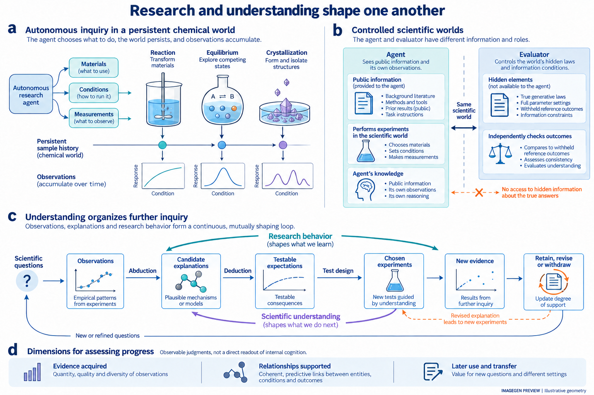
Figure 2Objectives reshape research trajectories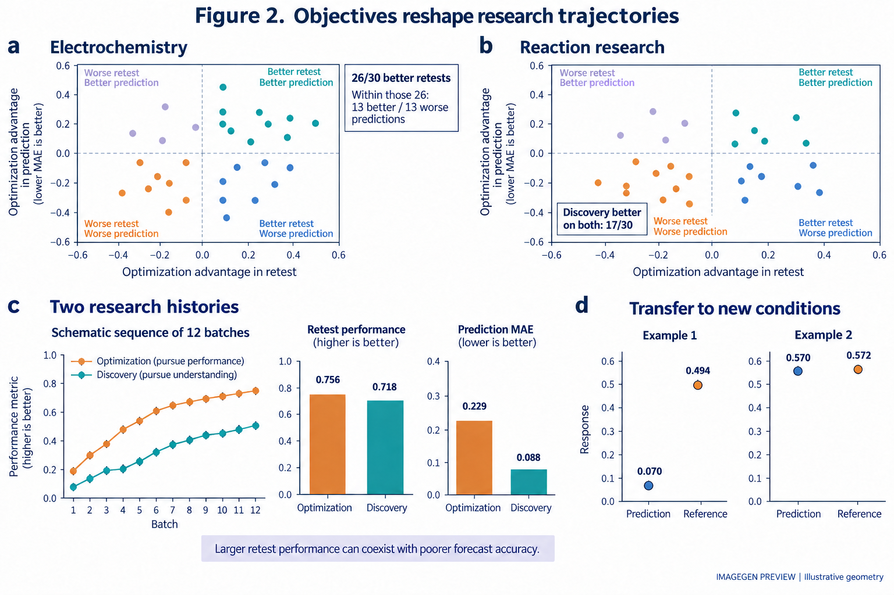
Figure 3Different evidence histories can yield accurate forecasts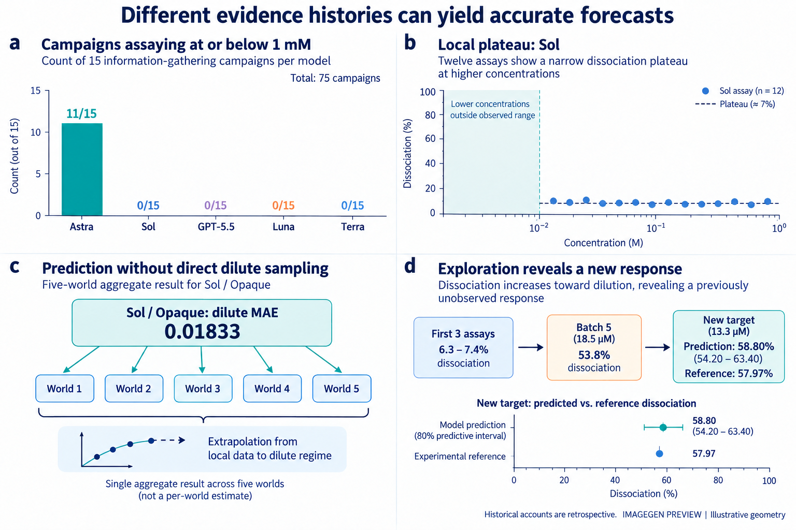
Figure 4From competing explanations to prospective tests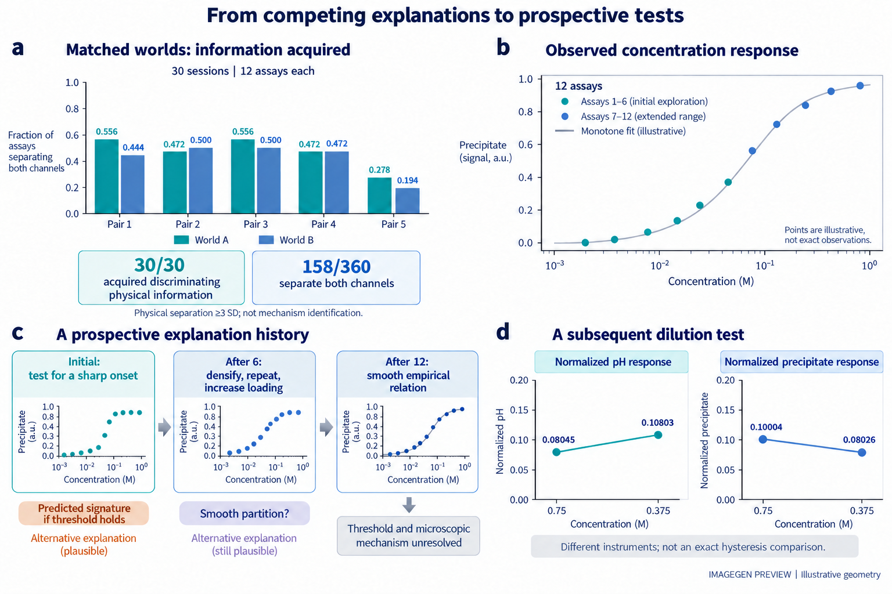
Figure 5Evidence can support local progress or warrant withdrawal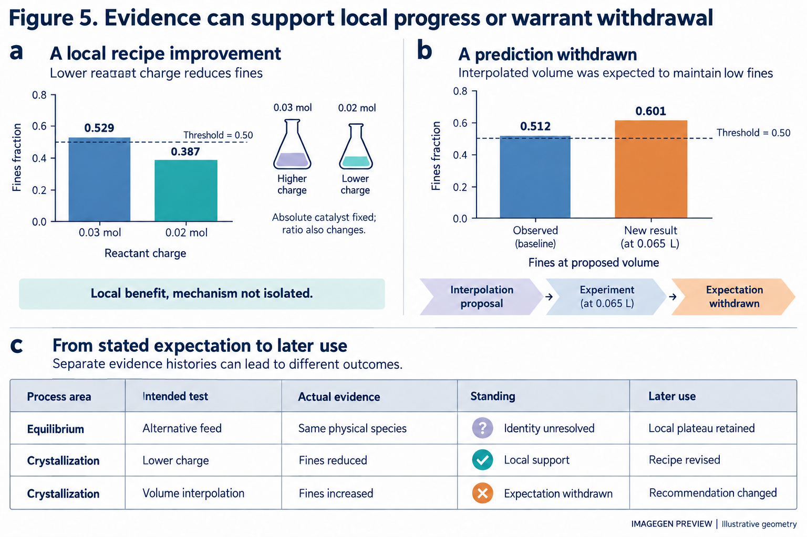
Figure 6Progress depends on the condition and the response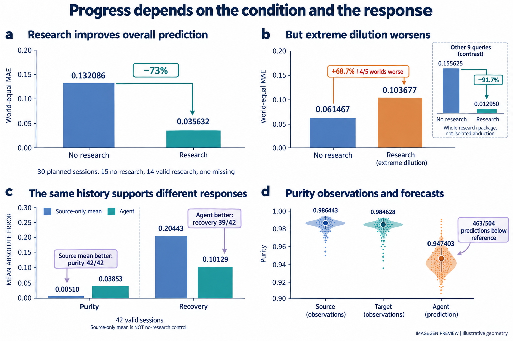
Extended Data 1Prior knowledge and the limits of transfer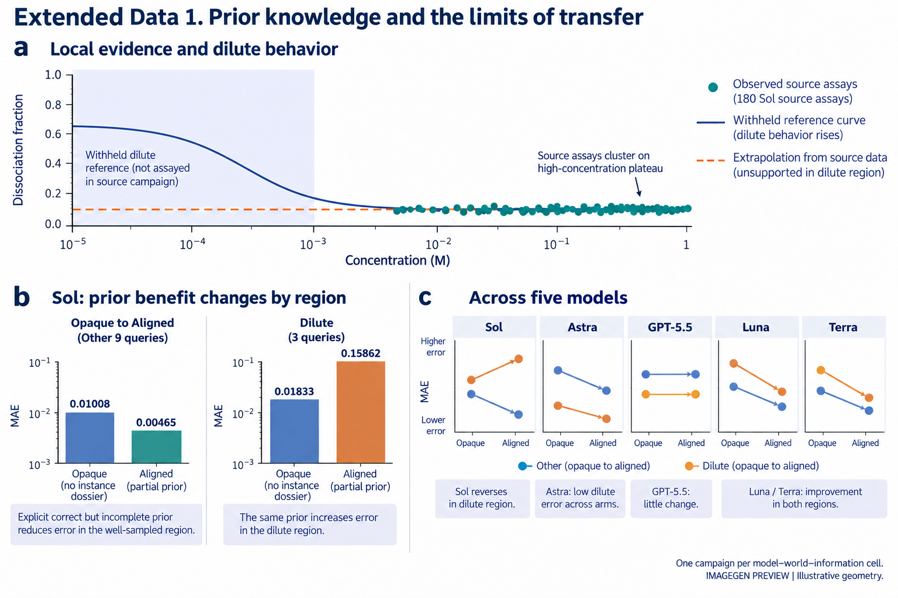
Extended Data 2What the process records can establish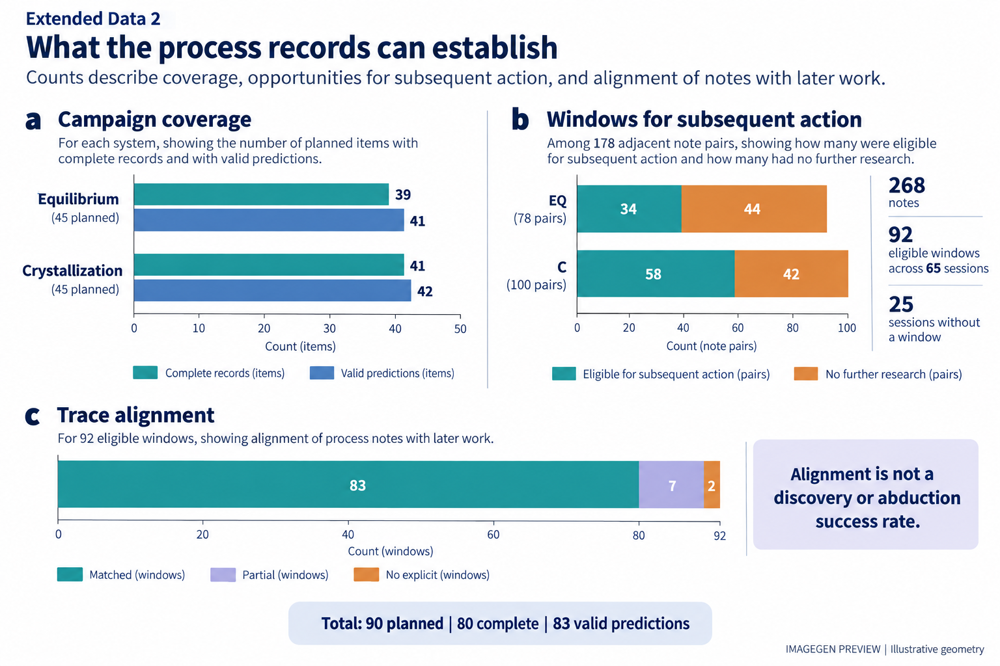
Extended Data 3Observed responses and subsequent forecasts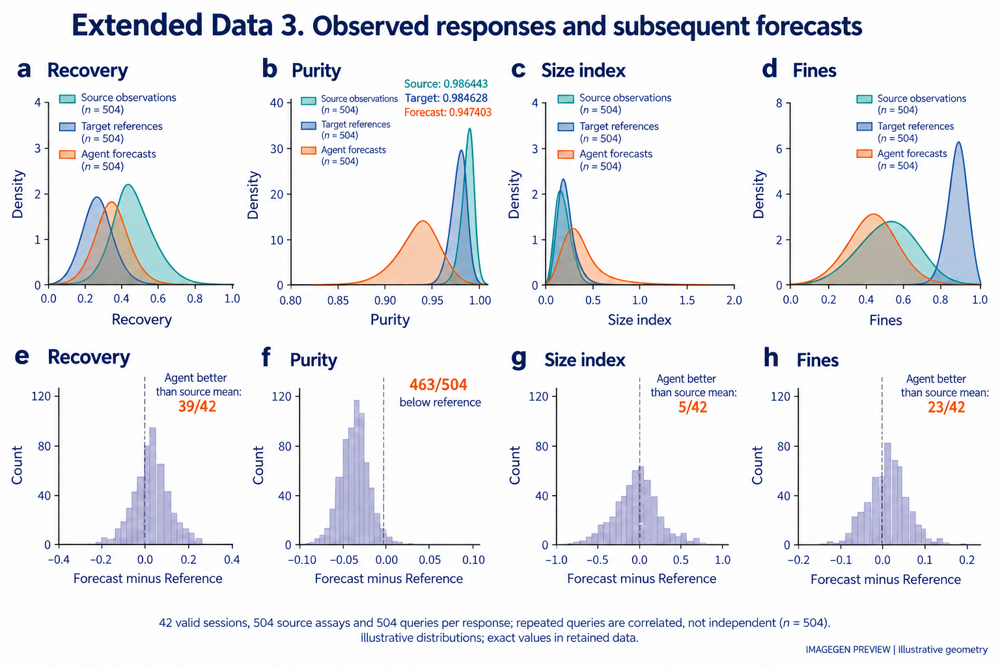
Extended Data 4A matched physical control isolates the quench operation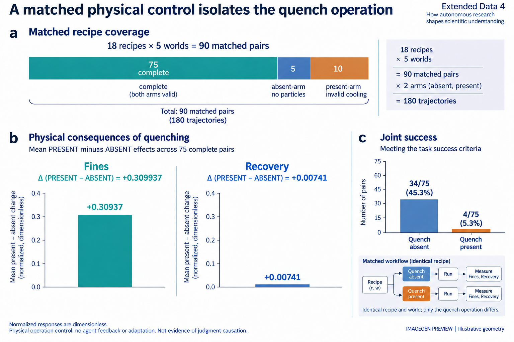
Extended Data 5An explanation remains unresolved despite a local pattern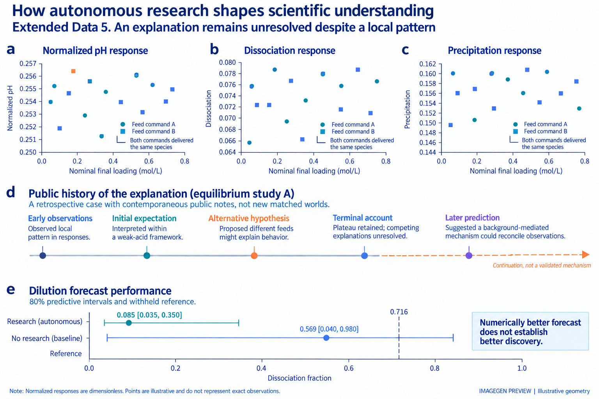
Extended Data 6Experimental history can be misconstrued or reconstructed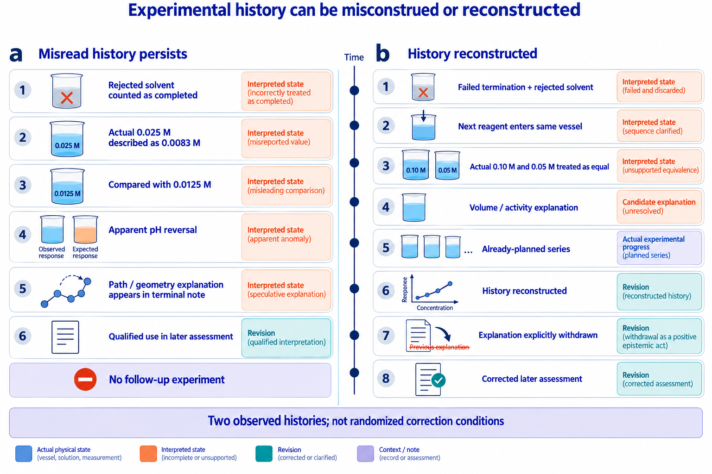